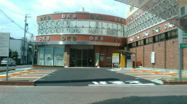
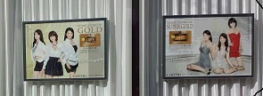

先般、名古屋市の某所を走っていたところ、赤信号で止まった。止まった場所で何気なく左側を見ると、なんかハデな建物が目にとまった。（あれ、なんだろう
この建物？） なんだか気になったので、交通のジャマにならないように車を停めなおしてジックリ and ジロジロ(^0^；

建物も楕円形で壁は煉瓦的な雰囲気の茶色、壁のスペースにはOKB OKBというロゴがベタベタと貼ってある。とても普通の事務所とは思えない。写真では分かりにくいが、駐車場の壁サイドもOKBのロゴのオンパレード。建物正面の左サイドは大きなガラス張りになっているが、そこにはなんだか着飾った女性の写真。

（芸能事務所の建物か？ OKB４８なんてのでも出来たのか？） なんてことを思いながら、話のタネにと車の窓から身を乗り出してケータイ写真をパチパチ。そんなことをしていると、建物正面のガラス戸の中に一人の男性の頭がチラチラ。なんだか こっちを観察しているような感じがしたが、たいして気にもしないで そのままパチパチ。すると その男性が建物からでてきて こっちへ歩いて来た。見ると どうやら警備員さん。（あれ、なんか 怪しまれたかな？）と思ったので、“オイ コラッ”（？）と云われる前に早々に退散した（車を発進）。
後日、調べてみると、なんと これは大垣共立銀行の某名古屋支店だった（OKBはOgaki Kyouritu Bankの略）。大垣共立銀行は話題性をもった建物を造るので有名だが、この建物も その一環らしい。そんな銀行支店の前に車を停め、ジロジロ眺めたあげく、写真をパチパチしていれば、怪しまれても当然か(^0^；
|